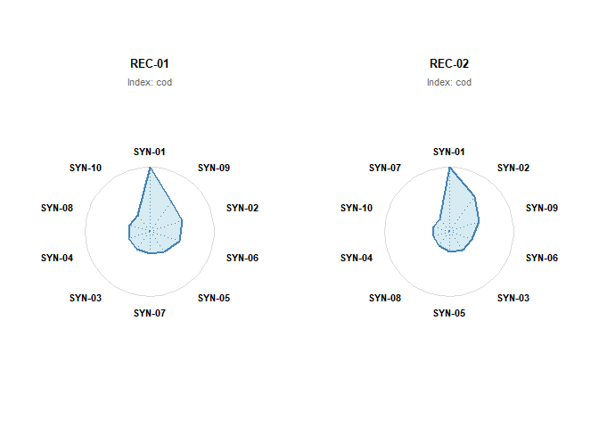
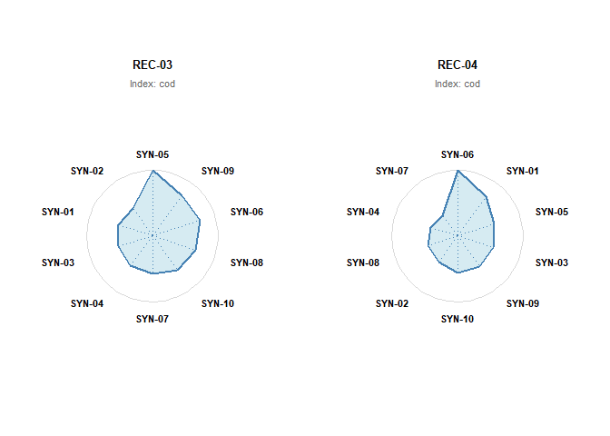
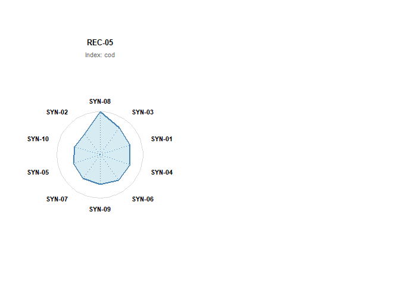
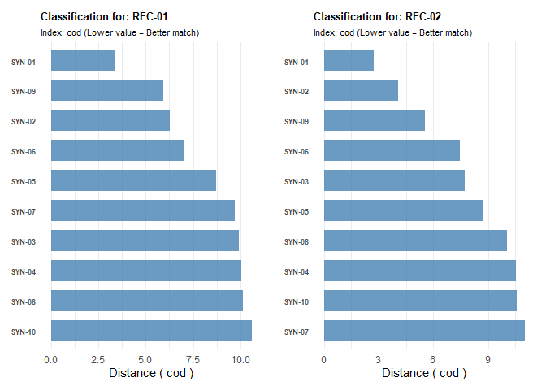
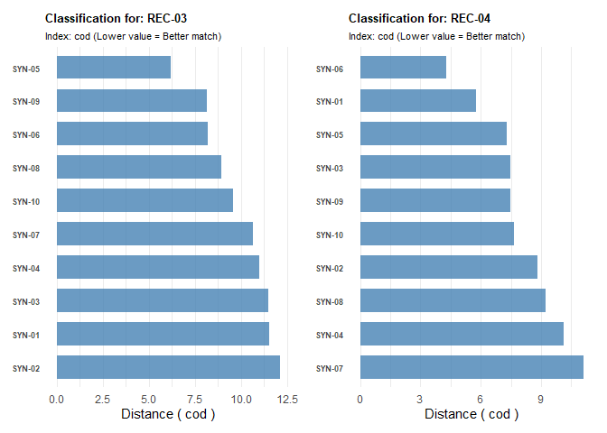
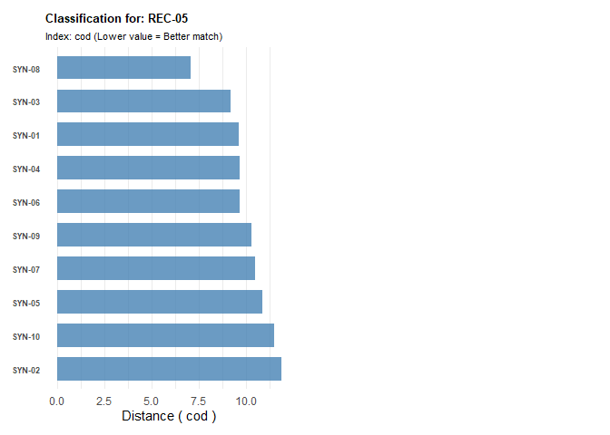

Inbovegtypering package
The goal of inbovegtypering is to classify vegetation relevés (plots) into predefined vegetation types (syntaxa) based on the methods described by van Tongeren et al. (2008). It implements the ASSOCIA algorithm for supervised clustering.
Installation
You can install the development version of inbovegtypering from GitHub with:
# install.packages("devtools")
devtools::install_github("inbo/inbovegtypering")
#> Warning: `install_github()` was deprecated in devtools 2.5.0.
#> ℹ Please use pak::pak("user/repo") instead.
#> This warning is displayed once per session.
#> Call `lifecycle::last_lifecycle_warnings()` to see where this warning was
#> generated.
#> Using GitHub PAT from the git credential store.
#> Downloading GitHub repo inbo/inbovegtypering@HEAD
#> Warning in untar2(tarfile, files, list, exdir, restore_times, allow_all):
#> skipping pax global extended headers
#> Warning in untar2(tarfile, files, list, exdir, restore_times, allow_all):
#> skipping pax global extended headers
#>
#> ── R CMD build ─────────────────────────────────────────────────────────────────
#> checking for file 'C:\Users\pieter_verschelde\AppData\Local\Temp\RtmpaWYQat\remotes14b82dc379f3\inbo-inbovegtypering-bcc533f/DESCRIPTION' ... checking for file 'C:\Users\pieter_verschelde\AppData\Local\Temp\RtmpaWYQat\remotes14b82dc379f3\inbo-inbovegtypering-bcc533f/DESCRIPTION' ... ✔ checking for file 'C:\Users\pieter_verschelde\AppData\Local\Temp\RtmpaWYQat\remotes14b82dc379f3\inbo-inbovegtypering-bcc533f/DESCRIPTION' (384ms)
#> ─ preparing 'inbovegtypering':
#> checking DESCRIPTION meta-information ... checking DESCRIPTION meta-information ... ✔ checking DESCRIPTION meta-information
#> ─ checking for LF line-endings in source and make files and shell scripts (424ms)
#> ─ checking for empty or unneeded directories
#> ─ building 'inbovegtypering_0.2.0.tar.gz'
#>
#>
#> Installing package into 'C:/Users/pieter_verschelde/AppData/Local/Temp/RtmpimzOoB/temp_libpath57d419b9e2b'
#> (as 'lib' is unspecified)Methodology
The core function classify_vegetation() calculates similarity indices between your vegetation recordings and a reference synoptic table.
The indices include:
Composite Distance (CoD): The primary classification metric combining qualitative and quantitative data.
(un)Likelihood (-2ln): A qualitative distance measure based on species presence/absence.
Weirdness: Measures the presence of unexpected species.
Incompleteness: Measures the absence of expected species.
Modified Euclidean Distance (MED): A quantitative distance measure based on species abundance (cover).
Note: For all these indices, a lower value indicates a better match.
Workflow
The classification process requires two main inputs:
Recordings Data: Your plot data containing species cover values.
Synoptic Table: A reference table defining the vegetation types (syntaxa) with species frequencies and characteristic cover.
Example: Basic Classification
This example uses the dummy datasets included in the package (example_recordings and example_synoptics).
library(inbovegtypering)
library(dplyr)
#>
#> Attaching package: 'dplyr'
#> The following objects are masked from 'package:stats':
#>
#> filter, lag
#> The following objects are masked from 'package:base':
#>
#> intersect, setdiff, setequal, union
# 1. Load Example Data
# --------------------
data("dummy_recordings")
data("dummy_synoptics")
# Inspect the recordings (5 plots)
head(dummy_recordings)
#> recording species_number pct_value layer_code
#> 1 REC-01 1 70 K
#> 2 REC-01 2 60 K
#> 3 REC-01 3 50 K
#> 4 REC-01 15 5 K
#> 5 REC-01 18 2 K
#> 6 REC-02 1 60 K
# 2. Run Classification
# ---------------------
# We classify the recordings against the provided synoptic table.
# By default, this calculates the Composite Distance (CoD) and all sub-indices.
classification_results <- classify_vegetation(
data = dummy_recordings,
synoptics = dummy_synoptics,
layer = "K" # Analyze the herb layer
)
# 3. Inspect Results
# ------------------
# Print the result object (shows top matches for each recording)
print(classification_results)
#> List of INBO vegetation classifications
#> Number of recordings classified: 5
# Get a detailed summary for the first recording
# Shows top 5 matches sorted by CoD
summary(classification_results, top_n = 5)
#> Classification Summary for Recording: REC-01
#> Sorted by: cod (ascending/best fit first)
#> Top 5 matches:
#>
#> syntaxon cod nrm_cod med nrm_llk nrm_wrd nrm_inc
#> 1 SYN-01 3.372355 1.665361 0.2174641 0.6584955 1.1886884 -0.2048025
#> 2 SYN-09 5.921931 2.263346 0.9435074 0.9096194 0.9723336 0.7994583
#> 3 SYN-02 6.269017 2.949941 0.9063139 1.6978655 1.4234778 2.2847208
#> 4 SYN-06 7.012152 2.531711 1.0425745 1.1563578 1.1955679 1.0885513
#> 5 SYN-05 8.696374 3.270385 1.4195685 1.7880119 1.6806671 1.9759551
#>
#> --------------------------------------------------------
#>
#> Classification Summary for Recording: REC-02
#> Sorted by: cod (ascending/best fit first)
#> Top 5 matches:
#>
#> syntaxon cod nrm_cod med nrm_llk nrm_wrd nrm_inc
#> 1 SYN-01 2.733982 1.245738 0.2231673 0.1707409 0.4461629 -0.2777210
#> 2 SYN-02 4.052644 1.590626 0.7904246 0.3369052 0.5518515 -0.1228179
#> 3 SYN-09 5.542988 2.140367 0.8801494 0.8017874 0.8178795 0.7735206
#> 4 SYN-06 7.431981 2.676284 1.0727228 1.3143212 1.4263395 1.1206066
#> 5 SYN-03 7.723199 2.880026 1.1275696 1.5431004 1.7656657 1.1379333
#>
#> --------------------------------------------------------
#>
#> Classification Summary for Recording: REC-03
#> Sorted by: cod (ascending/best fit first)
#> Top 5 matches:
#>
#> syntaxon cod nrm_cod med nrm_llk nrm_wrd nrm_inc
#> 1 SYN-05 6.217814 2.454200 0.8671366 1.174695 1.252171 1.039047
#> 2 SYN-09 8.153931 3.219852 1.0513430 2.021942 2.145422 1.805041
#> 3 SYN-06 8.219495 2.988860 1.1192153 1.665442 1.775662 1.474837
#> 4 SYN-08 8.959378 3.589311 1.2965249 2.263874 1.917246 2.875094
#> 5 SYN-10 9.579478 3.983290 1.2446424 2.874067 2.697350 3.211802
#>
#> --------------------------------------------------------
#>
#> Classification Summary for Recording: REC-04
#> Sorted by: cod (ascending/best fit first)
#> Top 5 matches:
#>
#> syntaxon cod nrm_cod med nrm_llk nrm_wrd nrm_inc
#> 1 SYN-06 4.303275 1.409566 0.7226505 0.1635158 0.4211785 -0.2820635
#> 2 SYN-01 5.769594 2.174549 0.8054994 0.8674506 0.6821436 1.1691808
#> 3 SYN-05 7.292767 2.944783 0.9655875 1.6986442 1.5518740 1.9556148
#> 4 SYN-03 7.464647 3.022793 1.0249319 1.7160470 1.3032079 2.4675965
#> 5 SYN-09 7.487446 3.029285 0.9493690 1.8370988 1.8234753 1.8610292
#>
#> --------------------------------------------------------
#>
#> Classification Summary for Recording: REC-05
#> Sorted by: cod (ascending/best fit first)
#> Top 5 matches:
#>
#> syntaxon cod nrm_cod med nrm_llk nrm_wrd nrm_inc
#> 1 SYN-08 7.076804 2.689280 0.9692206 1.452783 2.085255 0.3375279
#> 2 SYN-03 9.161361 3.657534 1.0288563 2.657296 2.709490 2.5622807
#> 3 SYN-01 9.618882 3.638024 0.9257886 2.764260 3.320704 1.8582168
#> 4 SYN-04 9.661014 3.870582 1.1153621 2.939197 3.581662 1.8130169
#> 5 SYN-06 9.686678 3.629870 1.0536226 2.611787 2.916086 2.0855588
#>
#> --------------------------------------------------------
# 4. Visualization
# ----------------
# A) Classification Rose Plot
# Visualizes the "distance" to the best matching syntaxa.
# Longer spokes = Better Match.
# We plot the results for REC-01 and REC-02 (which are very similar)
plot(classification_results,
indextype = "cod",
types = 10,
ncol = 2, nrow = 1)


# B) Classification Bar Chart
# Shows the distance scores directly (Shorter bars = Better Match)
# Useful for comparing the exact metric values.
barplot(classification_results,
indextype = "cod",
types = 10,
ncol = 2, nrow = 1)

